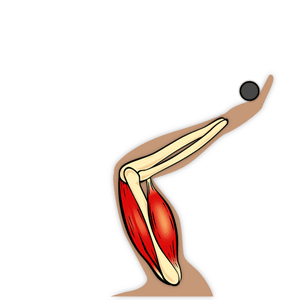
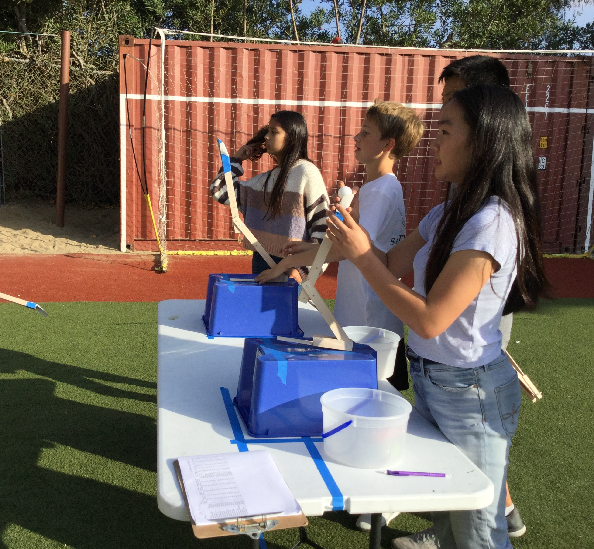

PRIYANKA'S EIGHTH GRADE PORTFOLIO
PROSTHETICS (on whitebox learning)
At the beginning of the year, we learned about prosthetics. Our work was done on Whitebox Learning where we inputed values for different characteristics of our prosthetic arm. The goal was to make our simulated prosthetic arm throw a ball a certain distance and get the ball exactly on the target.
After we perfected our simulations, we printed the dimensions for our "arms" and built them out of balsa wood. We used wood glue, rubber bands, and screws to attatch the wood together. Finally, we tested our prosthetic arms by throwing ping pong balls into buckets ten feet away. I got the ball in once! It was very hard, trust me.
Picture #1 (top left): A random gif of how our prosthetic arms worked! Picture #2 (top right): A picture of us testing our built prosthetic arms! Picture #3 (bottom middle): A screenshot of my virtual prosthetic arm!
 
3D PRINTING AND MODELING (on sketchup)
Once we got into the flow of eighth grade, we started doing 3D printing on a webside named sketchup! In sketchup, we 3D modeled an adapter to go on a 3D printed model hand. I made a whisk and a spatula! It was a little hard making the whisk at first because I didn't know how to do the rods. But I finally got it! The spatula was pretty easy compared to the whisk since it was all simple shapes. Unfortunetely, I couldn't print my whisk and spatula since they were complex shapes and they wouldn't fit in the 3D printer.
Where I 3D printed! Picture #1 (top): A 3D printer printing "3D"
Picture #2: A screenshot of my 3D modeled whisk and spatula!

VEX ROBOTICS
Once we finished our 3D printed gadgets, we started building robots! Mrs. Trout gave us groups and in those groups of about 6 people, we built the VEX robot. It was hard at first since we kept putting in the screws wrong and it was a struggle taking them out, but once we got the hang of it, we finished building the robots pretty fast.
After we finished building the robots, we got to the fun part coding them to do tasks! We did this in different groups of 3. First, we coded them to go forwards and backwards for a specific time, then we made them pick up a football, and finally we attached a limit switch to our robot and programmed it to go "home" (or the back right corner of the "arena"). Programming the "home" code was definetely the hardest part and I spent three whole class periods perfecting it! At the competition to see which robot could push the most balls on the other side of the arena, our robot won! I wasn't able to attend, unfortunately, but one of my groupmates controlled the robot during the competition. This was my favorite part of Technology this year!
Picture #1 (top left): Kate, Kylie, and I building our VEX robot!
Picture #2 (top right): Our robot and another groups' robot holding claws!
Picture #3 (bottom middle): Some of our code from the tasks!

WEBSITE DESIGN WITH BRACKETS
Towards the end of the year, we started learning HTML, a language of code used for website design. At first, we were learning it on StudioWeb, but that got a little boring since it was just a monotone guy speaking slow and some questions after the video. After we finished a few chapters of HTML on StudioWeb, we started learning CSS on Khan Academy. It was a lot more interesting and fun because we actually got to tinker with some code! Once we finished all the assignments, we started coding our own websites on the code editor, Brackets I'm writing code on Brackets this very second! I'm coding this whole webpage using HTML and CSS.
How I'm coding this website!Picture: A screenshot of some of the code for this website!